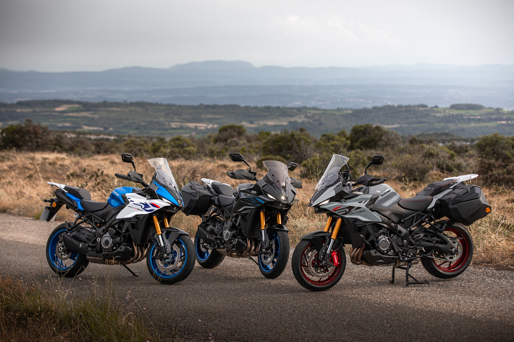
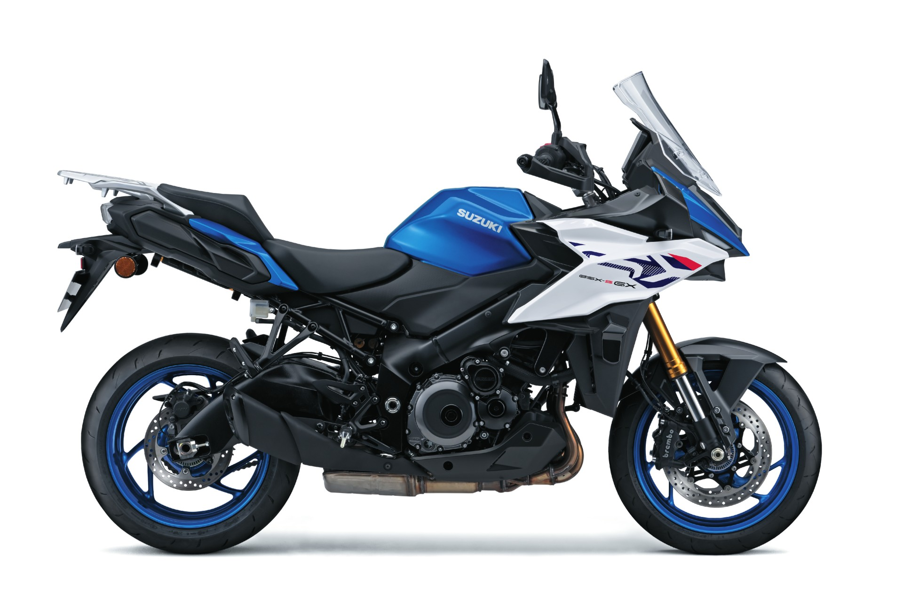

Novedades › Suzuki GSX-S1000GX
Novedades · Crossover sport-turismo 1.000
Suzuki GSX-S1000GX 2026: una GT accesible (con 152 CV, semiactiva y maletas por 1 €)
Suzuki ha ido rebajando año tras año su crossover de litro: de los 18.799 € del lanzamiento a los 16.999 € actuales, rebajados a 16.599 € con las maletas laterales por 1 € extra. En un segmento donde la BMW S 1000 XR o la Ducati Multistrada no bajan de 19.000-22.000 €, la GX se ha convertido en la puerta de entrada al tetracilíndrico de litro con suspensión semiactiva. Esto es lo que dicen los usuarios que ya la tienen.

La respuesta rápida
La Suzuki GSX-S1000GX 2026 es lo que Suzuki llama una trail sport turismo: un crossover de asfalto nacido de mezclar la GSX-S1000GT con la aventura de una V-Strom. Monta el tetracilíndrico en línea de 999 cc heredado de la GSX-R1000 (el famoso bloque K5, menos fiero que el original pero igual de probado) con 152 CV a 11.000 rpm y 106 Nm a 9.250 rpm. Su estrella es la suspensión electrónica semiactiva SAES de Showa, la primera de Suzuki, de serie junto a IMU de seis ejes, quickshifter bidireccional, control de crucero inteligente, ABS en curva y pantalla TFT de 6,5". Pesa 232 kg en orden de marcha, tiene el asiento a 845 mm y un depósito de 19 litros.
Y sobre todo, cuesta lo que cuesta: el PVP 2026 es de 16.999 €, en promoción a 16.599 € con las maletas laterales por 1 € más. Cuando se presentó a finales de 2023 salía a 18.799 € y en su primer año la prensa coincidía en que "no es precisamente barata". Dos años después, con una rebaja cercana a los 2.200 € y las maletas (valoradas en más de 1.000 €) por 1 €, el argumento del precio ha cambiado por completo.
Ficha técnica
| Cilindrada | 999 cc, 4 cilindros en línea, 16 válvulas DOHC |
| Diámetro × carrera | 73,4 × 59,0 mm |
| Compresión | 12,2:1 |
| Potencia | 152 CV (111,8 kW) a 11.000 rpm |
| Par | 106 Nm a 9.250 rpm |
| Cambio / transmisión | 6 velocidades, cadena |
| Consumo / CO2 | 6,2 l/100 km / 144 g/km (ciclo aprobado) |
| Chasis | Doble viga de aluminio (herencia GSX-R1000) |
| Suspensión | Horquilla invertida y monoamortiguador Showa, semiactivos SAES |
| Frenos | Doble disco 310 mm con pinzas Brembo monobloque radiales; disco trasero 250 mm |
| Neumáticos | 120/70-R17 y 190/50-R17 (Dunlop Sportmax Roadsport 2) |
| Peso / asiento | 232 kg en orden de marcha / 845 mm |
| Depósito | 19 litros |
| Normativa | Euro5+ · Carnet A |
| Garantía | 8 años de garantía + asistencia en carretera (promoción) |
Las cifras de potencia y par no aparecen en la ficha de la web oficial española (se limita a cilindrada y consumo); están tomadas de las fichas de Motofichas y de las pruebas de prensa, que coinciden en 152 CV y 106 Nm.
Qué cambia en 2026
- Alerones (winglets) desarrollados en el túnel de viento de la fábrica para mejorar la estabilidad a alta velocidad (probados a más de 200 km/h).
- Espejos revisados con menos vibraciones.
- Tres nuevas decoraciones: Blanco Perla Brillante / Azul Tritón Metalizado, Gris Mate Vidrio y Negro Brillante Glaseado (la 2025 fue azul, rojo y negro).
- Sin cambios mecánicos: se mantiene el mismo motor de 152 CV y la suspensión semiactiva SAES (SIRS).
El precio: la gran noticia de la GX
Suzuki ha ido corrigiendo el precio de la GX hacia abajo desde su lanzamiento, y eso es exactamente lo que los usuarios pedían en 2024. La evolución de la tarifa en España:
| 2024 (lanzamiento, EICMA 2023) | |
| 2025 (última tarifa) | 15.999 € |
| 2026 (PVP actual) | 16.999 € · 16.599 € en promoción + maletas laterales por 1 € |
Precios de referencia en España (motofichas.com y web oficial). El PVP incluye matriculación, transporte e IVA en península y Baleares; la promoción de 16.599 € con maletas por 1 € está vigente hasta el 31/12/2026 para modelos 2026 y puede variar por concesionario y comunidad autónoma. Verifica siempre con tu concesionario.
El truco está en lo que incluye esa promoción: las maletas laterales oficiales cuestan 1.070 € + IVA (~1.295 €) por separado. Con la oferta, por 16.600 € te llevas la moto y el equipaje de viaje. Suma la garantía ampliada de 8 años y 8 años de asistencia en carretera desde el kilómetro cero (que en Suzuki cubre también al conductor, acompañante y la moto, con vehículo de sustitución u hotel), y el coste de acceso a una GT de litro queda muy por debajo de lo habitual.
Cómo encaja frente a la competencia
| Modelo | Potencia | Peso | Precio referencia |
|---|---|---|---|
| Suzuki GSX-S1000GX 2026 | 152 CV | 232 kg | 16.599 € (promo) + maletas por 1 € |
| Yamaha Tracer 9 GT 2025 | 119 CV | 227 kg | 16.399 € |
| Kawasaki Versys 1100 S 2026 | 135 CV | 257 kg | 15.835 € (promo; ~16.985 € PVP) |
| Yamaha Tracer 9 (base) 2025 | 119 CV | 219 kg | 12.799 € |
| BMW S 1000 XR / Ducati Multistrada V4 S / KTM 1390 Super Duke GT | 170+ CV | 229-240 kg | ≈ 19.000-23.000 € |
Los precios de BMW, Ducati y KTM son rangos orientativos: no los hemos confirmado en tarifa vigente, pero se sitúan claramente por encima de los 19.000 € en el mercado español. Consulta con el concesionario para cifras exactas.
La lectura es doble. Frente a las ruteras de tres cilindros (Tracer 9 GT), la GX está prácticamente al mismo precio por más motor y más tecnología: otros 33 CV, semiactiva de serie y maletas incluidas por la promoción. Frente a las crossovers premium de litro (S 1000 XR, Multistrada, Super Duke GT), el ahorro se mueve entre los 3.000 y los 6.000 €. Los usuarios de forocoches lo resumieron bien ya en su lanzamiento: "Lo que sería un XR o una Multistrada fiable, menos potente y más barata". Ahora además es la única que en promoción te da las maletas.
Accesorios touring: las maletas son solo el principio

El catálogo de accesorios oficial de la GX tiene 33 artículos, y buena parte apunta directamente al viaje. Las maletas laterales llevan un sistema de una sola llave: se cierran con la llave de contacto en combinación con el juego de bombines (ref. 95700-48810-000). Detalle a tener en cuenta para los viajeros: cada maleta admite 5 kg de carga máxima (26 litros por caja) y Suzuki limita su uso a velocidad inferior a 130 km/h.
| Juego de maletas laterales (ref. 95401-48850-000) | ≈ 1.070 € + IVA · por separado es el paquete de la promo “maletas por 1 €” |
| Juego de soportes para maletas parte trasera (93700-48820-000) + adaptador (93900-48810-000) | A consultar (necesarios junto a las maletas) |
| Juego de bombines (95700-48810-000) y molduras del color de la moto | A consultar (cierre con llave de contacto) |
| Caballete central | A consultar · uno de los accesorios más pedidos (no viene de serie) |
| Puños calefactables | A consultar |
| Asiento Premium (doble espuma, superficie más fresca) y asiento bajo | A consultar |
| Bolsas de depósito (pequeña, grande) + anillo de anclaje | A consultar |
| Pantalla baja ahumada | A consultar (la de serie es regulable en 3 posiciones, pero con herramienta) |
| Kit protector de caídas y deslizadores de ejes | A consultar |
| Silenciador deslizante Akrapovic (2 versiones) | A consultar |
Solo hemos podido confirmar el precio de las maletas (1.070 € + IVA según la prueba de Motofichas de 2024); el resto de accesorios oficiales se gestionan por referencia en el concesionario y sin precio público en la web. Como alternativa, las marcas de terceros (Givi, SW-Motech con su sistema TRAX y SHAD) ya ofrecen maletas y soportes compatibles con la GX 2023-2026 a precios generalmente inferiores a los oficiales.
Ojo con la promoción: con el “maletas por 1 €” no todas las maletas te salen por ese dinero — la web oficial incluye el juego de maletas laterales (y hace falta también el juego de cerraduras). Confirma con el concesionario qué incluye exactamente cada pack.
Opiniones de la prensa
- Motofichas (prueba de lanzamiento, enero 2024): "El pero principal es el precio, 18.799 € sin las maletas, que para mí son ingrediente básico de su filosofía". Elogia la postura de conducción, el motor "fino y sedoso que se vuelve rotundo", la suspensión semiactiva ("muy acertada, la primera de Suzuki") y la frenada Brembo "potente y dosificable". Critica la pantalla regulable con herramienta y la ausencia de radar y llave de proximidad.
- DirectoMotor (prueba 2026): la define como "una de las opciones más equilibradas y honestas del panorama crossover actual". Motor "una delicia de la ingeniería tradicional, progresivo abajo, demoledor arriba", "confort de marcha imperial en largas distancias" y suspensiones SAES que "hacen magia". Como contras: menús del TFT "poco intuitivos", peso en maniobras paradas y "nula protección contra el barro en el tren trasero". Consumo real medido de 6,2 l/100 km.
- Moto1Pro (novedades 2026): se centra en los alerones de túnel de viento y los espejos antivibración; "todavía desconocemos precio en España" (noviembre 2025).
La voz de los usuarios
Es difícil encontrar a alguien que lleve la GX y se arrepienta, pero los foros sí recogen un debate de fondo sobre su posicionamiento. En el hilo de ForoCoches dedicado a la moto (febrero 2024 en adelante) se repiten estos argumentos:
- Lo mejor para la mayoría: "Han creado la máquina definitiva para muchísimos usuarios de maxi trail que no pisan tierra en su vida. Motor de 4 cilindros súper testado, con 152 CV y 106 Nm, electrónica para aburrir. Lo que sería un XR o una Multistrada fiable, menos potente y más barata" (usuario con KTM 890S).
- Alguno se enamoró en el EICMA: "Me parece una moto preciosa, sobre todo en azul, lo más bonito que ha hecho Suzuki en mucho tiempo. Si me sobrara el dinero ya tendría una... es de esas motos que no quieres ni acercarte a verla porque harías una locura".
- La comparación con la competencia: "Es de las más baratas de su competencia. Su competencia no es la Tracer 9 GT, es más bien la S 1000 XR, la Versys 1000, la Multistrada o la Super Duke GT. Hay que hacerse a la idea de que todo ha subido un huevo y ya no quedan motos baratas, bueno, sí, pero son chinas".
- El precio, que se lo recuerdan: "Debería ser 2.000-3.000 € menos"; "19.000 pelada en Salamanca, me pareció una bestialidad" (en 2024); "si valiera 15.000 € me parece mejor moto que la Tracer 9 GT". Con la rebaja actual a 16.599 € y maletas por 1 €, este era el argumento que faltaba.
- Los críticos del concepto: "No entiendo las modas de las maxi trail de más de 220 kg, si no sirve para meterse por lo marrón debería llamarse crossover"; "de maxitrail no tiene nada, es una sport-turismo, eso sí, una motaca, lástima del precio".
- Dos carencias que se repiten en casi todos los comentarios: sin caballete central de serie y pantalla regulable solo con herramienta. Ambas tienen solución en el catálogo de accesorios.
En las fichas de Motofichas, la valoración agregada de los usuarios es de 4,06/5 (34 votos) en la versión 2026-2027 y 3,8/5 (54 votos) en la 2025, con el 47% de los votos en cinco estrellas. Es decir: a quien la compra, le cuesta encontrarle pegas reales fuera del precio.
Conclusión
La etiqueta de “GT accesible” ya no es un eslogan de marketing: es la posición que Suzuki ha construido con dos años de recortes de tarifa y una promoción que te da las maletas por 1 €. Por 16.599 € recibes un tetracilíndrico de 152 CV con la primera suspensión semiactiva de la marca, IMU, quickshifter, ABS en curva, asiento de 845 mm, TFT de 6,5" y 8 años de garantía y asistencia. En el club de las crossovers de litro, ninguna rival premium baja de 19.000 €, y la Tracer 9 GT de 119 CV cuesta lo mismo sin maletas.
No es perfecta: los usuarios echan en falta el caballete central de serie, la pantalla sin herramienta y (los más techies) el radar y la llave de proximidad que sí tiene la competencia más cara. Pero son carencias de equipamiento puntero, no de concepto: motor, parte ciclo y confort recibieron prácticamente elogios unánimes. Si buscas hacer kilómetros y no quieres pagar el sobrecoste premium de la XR o la Multistrada, hoy es difícil encontrar una GT de litro con mejor relación entre lo que pagas y lo que te llevas.
Fuentes
- Suzuki España — GSX-S1000GX: precio y especificaciones oficiales
- Suzuki España — Catálogo de accesorios GSX-S1000GX
- Motofichas — Ficha y valoración de usuarios de la GSX-S1000GX 2026-2027
- Motofichas — GSX-S1000GX 2025 (última tarifa 15.999 €)
- Motofichas — Prueba GSX-S1000GX (Jorge Rubio, 2024)
- DirectoMotor — Prueba GSX-S1000GX 2026
- Moto1Pro — GSX-S1000GX 2026: 152 CV y ahora con alerones
- Forocoches — Hilo de usuarios sobre la GSX-S1000GX
- Motofichas — Kawasaki Versys 1100 S (precio de referencia)
- Motofichas — Yamaha Tracer 9 / GT (precios de referencia)